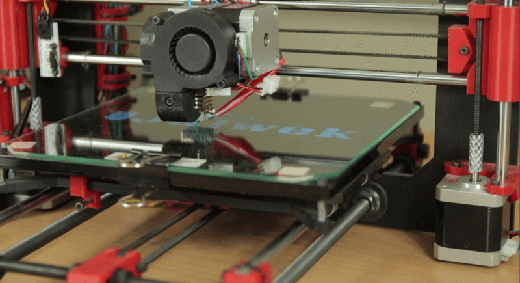

Drukarka 3D – jak działa?
Wstęp
Drukowanie 3D staje się coraz bardziej popularne, chociaż jeszcze niedawno było rozwiązaniem bliższym fantastyce niż rzeczywistości. Druk przestrzenny znajduje coraz szersze zastosowania, a przy tym staje się coraz tańszy. Sprawdźmy, jak działają drukarki 3D.
Działanie drukarek 3D
Drukarka 3D składa się z szeregu różnych komponentów. Wszystkie części mocowane są do specjalnej ramy. Ruchoma głowica napędzana jest przez silniki krokowe, które kontrolowane są przez specjalne sterowniki. Ta głowica jest najważniejszym elementem drukarki. To właśnie ona stapia w wysokiej temperaturze materiał, z którego powstanie druk 3D. Materiał nabywa się w specjalnych zwojach.
